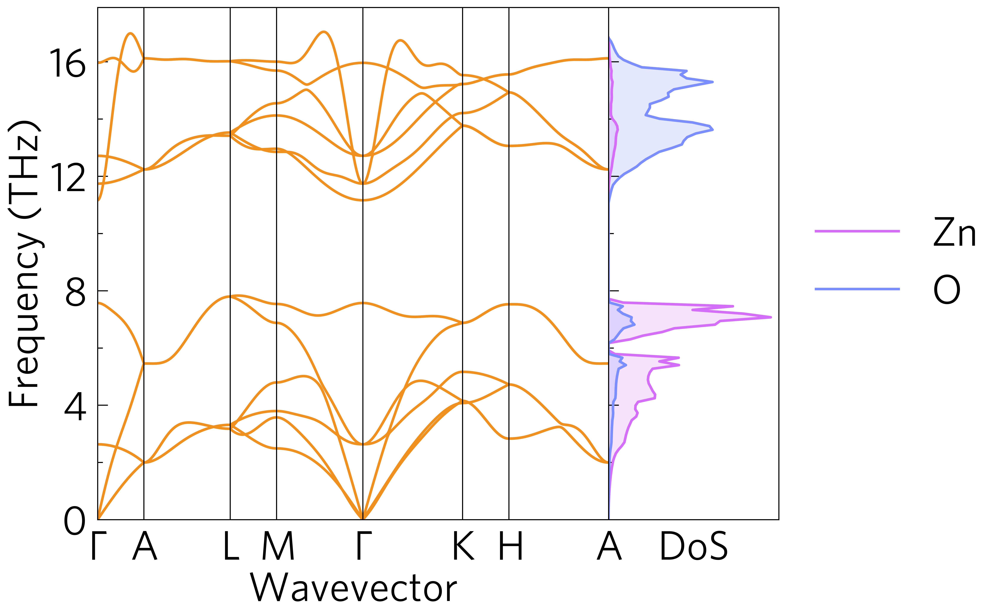

Phonons¶
This shows a phonon dispersion and density of states (DoS). This is the only combined plot currenty possible at the command line, with:
tp plot phonons ../data/zno/band.yaml --dos ../data/zno/projected_dos.dat --poscar ../data/zno/POSCAR -doscolour '#d46ef9' --doscolour '#7b8eff' -c '#f0901f'
and in python:
1 2 3 4 5 6 7 8 9 10 11 12 13 14 15 16 17 18 19 20 21 22 23 24 25 26 27 28 29 | #!/usr/bin/env python3
import tp
phile = '../data/zno/band.yaml'
dosfile = '../data/zno/projected_dos.dat'
poscar = '../data/zno/POSCAR'
colour = '#f0901f'
colours = {'Zn': '#d46ef9',
'O': '#7b8eff'}
# Axes
fig, ax, add_legend = tp.axes.large.one_dos()
# Load
dispersion = tp.data.load.phonopy_dispersion(phile)
dos = tp.data.load.phonopy_dos(dosfile, poscar=poscar)
# Add
tp.plot.phonons.add_dispersion(ax[0], dispersion, colour=colour)
tp.plot.frequency.add_dos(ax[1], dos, colour=colours, invert=True, line=True)
ax[1].set_ylim(ax[0].get_ylim())
add_legend()
# Save
fig.savefig('phonons.pdf')
fig.savefig('phonons.png')
|
All plot-types in tp.plot.frequency have an invert argument to plot
them side-on by a phonon dispersion, which also shortens their x-axis
labels and removes their y-axis labels and tick labels (line 22).
Currently the axes of the two plots have to be aligned manually, but
this is simple (line 24).
This shows phonons dispersions for various supercell sizes for convergence:
tp plot phonons ../data/basno3/band-*.yaml --legend_title "Supercell Size" -l "2 x 2 x 2" -l "3 x 3 x 3" -l "4 x 4 x 4" -l "5 x 5 x 5"
and in python:
1 2 3 4 5 6 7 8 9 10 11 12 13 14 15 16 17 18 19 20 21 22 | #!/usr/bin/env python3
import tp
scs = '222 333 444 555'.split()
files = ['../data/basno3/band-{}.yaml'.format(s) for s in scs]
label = [' x '.join(list(s)) for s in scs]
legend_title = 'Supercell Size'
# Axes
fig, ax, add_legend = tp.axes.large.one()
# Load
data = [tp.data.load.phonopy_dispersion(f) for f in files]
# Add
tp.plot.phonons.add_multi(ax, data, label=label)
add_legend(title=legend_title)
# Save
fig.savefig('multiphon.pdf')
fig.savefig('multiphon.png')
|
At the command line, the same command is used for both, but in python
a separate command, tp.plot.phonons.add_multi is used. While this
could be done by looping over tp.plot.phonons.add_dispersion, it
is bundled into a one-liner for convenience. As phonon dispersions do
not always have the same x-scale (at least in phonopy), this rescales
the dispersions so they always match, which is also useful to compare
different materials (so long as they are at least in the same space
group and are preferably closely related), or materials under expansion
or compression. This also demonstrates the large axes style, more
appropriate for presentations or posters than the default style, which
is better for papers; and the add_legend function, which adds a
pre-positioned legend, and accepts all the other usual arguments
including title (line 18).